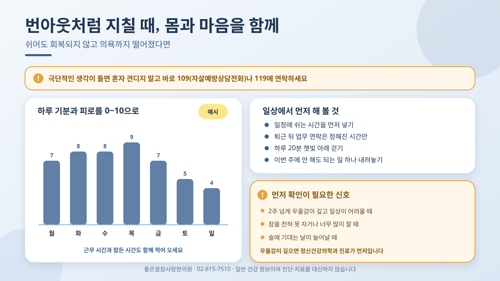
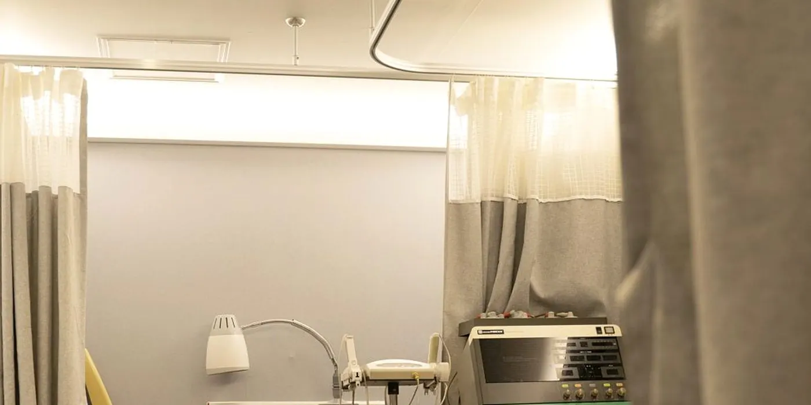

의욕이 없고 번아웃처럼 지치면 일의 부담과 휴식, 잠과 식사, 기분의 변화를 먼저 여쭙고, 우울감이 깊거나 극단적인 생각이 들면 바로 자살예방상담전화 109나 정신건강의학과의 도움을 받아야 합니다.
여쭙는 것
- 언제부터 지쳤나요? 일의 양과 쉬는 시간은 어떤가요?
- 잠과 식사, 체중의 변화는 어떤가요?
- 기분이 가라앉거나 흥미가 줄었나요? 얼마나 오래 이어졌나요?
생활에서 해 볼 것
- 하루 일정에 쉬는 시간을 먼저 넣고 퇴근 뒤 업무 연락은 정해진 시간만 보기
- 일정한 시간에 자고 일어나고, 하루 20분 햇빛 아래 걷기
- 힘든 점을 믿을 수 있는 사람에게 이야기하기
한의원에서 함께 살필 것
- 쉬어도 몸이 무겁고 아침마다 일어나기 힘든 경우, 잠과 기운의 흐름을 함께 살핍니다.
- 지친 상태에서 두통이나 어깨 결림, 소화 불편이 이어지는 경우, 몸의 긴장과 소화를…
- 정신건강의학과 진료를 받으면서 몸의 불편을 함께 살피고 싶은 경우, 그 치료와 겹치…
먼저 확인이 필요한 신호
- 2주 넘게 우울감이 깊고 일상이 어려운 경우
- 잠을 전혀 못 자거나 너무 많이 자는 경우
- 술에 기대는 날이 늘어나는 경우

오래 열심히 달려온 분이 어느 날 몸도 마음도 함께 지쳤다고 말하는 경우가 많습니다. 쉬어도 회복되지 않고 일에 대한 의욕까지 떨어졌다면, 몸의 피로와 마음의 소진을 함께 살펴야 합니다. 극단적인 생각이 든다면 혼자 견디지 말고 바로 109나 119에 연락하세요.
왜 이런 불편이 생길 수 있나요
- 일의 양과 책임이 오래 쌓이고 쉬는 시간이 부족하면 몸과 마음의 여유가 바닥날 수 있습니다.
- 잠이 줄고 식사가 불규칙해지면 피로가 회복되지 않은 채 다음 날로 이어집니다.
- 노력에 비해 보람이나 인정이 적다고 느낄 때 지침이 더 커진다는 분들이 많습니다.
- 우울증이나 갑상선 질환처럼 진료가 필요한 원인이 겹쳐 있는 경우도 있습니다. 한의학에서는 몸의 기운과 잠, 소화, 긴장 상태를 함께 살핍니다.

자주 하는 오해
- 번아웃은 의지가 약해서 생긴다고 여기기 쉽지만, 일의 양과 책임이 오래 쌓이고 쉬는 시간이 부족한 생활에서는 누구에게나 생길 수 있습니다.
- 휴가 한 번이면 회복된다고 생각하기 쉽지만, 돌아와 같은 생활이 이어지면 금방 다시 지치는 경우가 많아 일상의 쉼을 함께 조정해야 합니다.
- 번아웃과 우울증은 같은 것이라고 여기기 쉽지만, 겹치는 부분이 있어 우울감이 2주 넘게 깊게 이어진다면 정신건강의학과 진료가 필요합니다.
- 몸이 아픈 것과 마음이 지친 것은 따로라고 생각하기 쉽지만, 지친 시기에 두통·소화 불편·잠 문제가 함께 오는 경우가 많아 같이 살핍니다.
예를 들면 이런 경우입니다
- 예를 들어 몇 달째 야근과 주말 업무가 이어지며 출근 전날 밤마다 잠을 설치는 직장인이라면, 근무 시간과 잠든 시간을 나란히 적어 쉼을 넣을 자리를 함께 찾습니다.
- 예를 들어 아이를 돌보며 집안일까지 혼자 맡아 아무 의욕이 나지 않는다는 분이라면, 하루 중 잠깐이라도 혼자 쉴 수 있는 시간과 끼니를 함께 살핍니다.
- 예를 들어 오랫동안 가족을 돌보면서 어깨 결림과 소화 불편이 이어지는 분이라면, 몸의 불편과 함께 지친 마음을 이야기할 곳이 있는지 여쭙습니다.
먼저 이렇게 여쭙니다
- 언제부터 지쳤나요? 일의 양과 쉬는 시간은 어떤가요?
- 잠과 식사, 체중의 변화는 어떤가요?
- 기분이 가라앉거나 흥미가 줄었나요? 얼마나 오래 이어졌나요?
- 몸의 통증, 소화, 두통은 어떤가요?
스스로 점검해 보세요
- 쉬는 날에도 일 생각이 떠나지 않는다
- 아침에 일어나 하루를 시작하는 것이 버겁다
- 예전보다 짜증이 늘거나 감정이 무뎌졌다
- 잠이 얕거나 새벽에 자주 깬다
- 식사를 거르거나 단 음식·술에 기대는 날이 늘었다
- 두통, 어깨 결림, 소화 불편이 몇 주째 이어진다
- 좋아하던 일에도 흥미가 줄었다
해당하는 항목이 많고 2주 넘게 이어진다면 혼자 버티지 말고 상담을 받아 보세요. 극단적인 생각이 든다면 자살예방상담전화 109나 119에 바로 연락하세요.

일상에서 먼저 해 볼 수 있는 것
- 하루 일정에 쉬는 시간을 먼저 넣고 퇴근 뒤 업무 연락은 정해진 시간만 보기
- 일정한 시간에 자고 일어나고, 하루 20분 햇빛 아래 걷기
- 힘든 점을 믿을 수 있는 사람에게 이야기하기
- 술로 피로를 풀려는 습관 줄이기
- 이번 주에 하지 않아도 되는 일 한 가지를 정해 내려놓기
한의원에서 함께 살필 수 있는 경우
- 쉬어도 몸이 무겁고 아침마다 일어나기 힘든 경우, 잠과 기운의 흐름을 함께 살핍니다.
- 지친 상태에서 두통이나 어깨 결림, 소화 불편이 이어지는 경우, 몸의 긴장과 소화를 함께 살핍니다.
- 정신건강의학과 진료를 받으면서 몸의 불편을 함께 살피고 싶은 경우, 그 치료와 겹치지 않도록 먼저 확인합니다.
좋은꿈참사랑한의원에서는 지금의 생활과 몸의 불편을 충분히 듣고, 진맥을 기본으로 하고 필요하다고 판단될 때 설진을 더해 살핀 뒤 침이나 한약 상담 등 맞는 방법을 함께 정합니다. 우울감이 깊다면 정신건강의학과 진료를 먼저 권하고, 그 치료와 함께할 수 있는 부분을 안내합니다.
첫 방문에는 지치기 시작한 시기와 일의 부담, 쉬는 시간, 잠과 식사의 변화를 먼저 여쭙고, 정신건강의학과 진료나 복용 중인 약이 있는지 확인합니다. 이어서 진맥과 설진으로 몸 상태를 살피고, 피로가 깊다면 필요하다고 판단될 때 원내 혈액 검사로 기본 수치를 확인하거나 내과 진료를 안내합니다. 가져오신 근무·수면·기분 기록을 함께 보며 지침이 커지는 요일과 상황을 짚어 보고, 먼저 내려놓을 일과 치료 방향을 설명드립니다.

얼마나 지켜보고, 언제 상담하면 좋을까요
- 쉬는 시간과 잠을 먼저 챙기면서 2주 정도 하루 기분과 피로를 0~10으로 적어 보세요.
- 2주가 지나도 의욕이 돌아오지 않고 일상이 버겁다면 한의원이나 정신건강의학과 상담을 받아 보시길 권합니다.
- 잠을 전혀 못 자거나, 술에 기대는 날이 늘거나, 스스로를 해치고 싶은 생각이 든다면 기다리지 말고 109나 119에 바로 연락하세요.
이렇게 기록해 오시면 상담이 쉬워집니다
- 일주일 동안의 근무 시간과 잠든 시간
- 하루 기분과 피로를 0~10으로 적은 기록
- 몸이 특히 불편했던 날과 그 증상
- 복용 중인 약과 정신건강의학과 진료 여부

이런 증상은 먼저 확인이 필요합니다
- 2주 넘게 우울감이 깊고 일상이 어려운 경우
- 잠을 전혀 못 자거나 너무 많이 자는 경우
- 술에 기대는 날이 늘어나는 경우
- 극단적인 생각이나 스스로를 해치고 싶은 생각이 드는 경우
극단적인 생각이 들면 혼자 있지 말고 가까운 사람에게 알린 뒤 자살예방상담전화 109나 119에 바로 연락하세요. 정신건강의학과 약은 처방한 의사와 상의 없이 줄이거나 끊지 않습니다.
함께 읽으면 좋은 글
- 충분히 쉬어도 몸이 늘 피곤한 만성피로는 어떤 점을 살펴보나요?
- 가슴이 두근거리고 불안할 때는 어떤 점을 먼저 확인하나요?
- 일과 육아를 함께하는 30대 여성이 늘 피곤할 때는 무엇을 살피나요?
한눈에 보는 표
| 구분 | 핵심 |
|---|---|
| 여쭙는 것 | 언제부터 지쳤나요? 일의 양과 쉬는 시간은 어떤가요? 잠과 식사, 체중의 변화는 어떤가요? |
| 생활에서 해 볼 것 | 하루 일정에 쉬는 시간을 먼저 넣고 퇴근 뒤 업무 연락은 정해진 시간만 보기 일정한 시간에 자고 일어나고, 하루 20분 햇빛 아래 걷기 |
| 한의원에서 함께 살필 것 | 쉬어도 몸이 무겁고 아침마다 일어나기 힘든 경우, 잠과 기운의 흐름을 함께 살핍니다. 지친 상태에서 두통이나 어깨 결림, 소화 불편이 이어지는 경우, 몸의 긴장과 소화를 함께 살핍니다. |
| 먼저 확인이 필요한 신호 | 2주 넘게 우울감이 깊고 일상이 어려운 경우 잠을 전혀 못 자거나 너무 많이 자는 경우 |
자주 묻는 질문
번아웃은 한의원에서 어떻게 살피나요?
일의 부담과 휴식, 잠과 식사, 몸의 온기와 통증을 함께 여쭙고 생활 전체의 리듬 속에서 살핍니다.
우울증이 의심되면 어떻게 하나요?
우울감이 깊고 오래 이어지면 정신건강의학과 진료를 먼저 권합니다.
약을 먹고 있어요.
정신건강의학과 약은 임의로 끊거나 줄이지 말고 처방한 의사와 상의하세요.
쉬면 저절로 나아지나요?
쉬는 것이 출발점이지만 생활 리듬과 일의 부담을 함께 조정해야 하는 경우가 많아 기록하며 살펴보시길 권합니다.
이 글은 일반적인 건강 정보이며 개인의 진단이나 치료를 대신하지 않습니다. 증상이 있거나 복용 중인 약이 있다면 진료를 통해 확인하세요. 치료 효과는 개인마다 다를 수 있습니다.
작성 기준: 일반적으로 알려져 있는 건강 정보를 참고해 정리했습니다(대표원장 감수). 증상 기록은 1~2주 동안 하루 1회, 비슷한 시간에 적어 오시면 지난 상태와 비교하기 쉽습니다.
좋은꿈참사랑한의원은 재진 때 지난번 이야기부터 이어서 여쭙니다. 진료시간과 예약은 오시는 길에서 확인하세요.